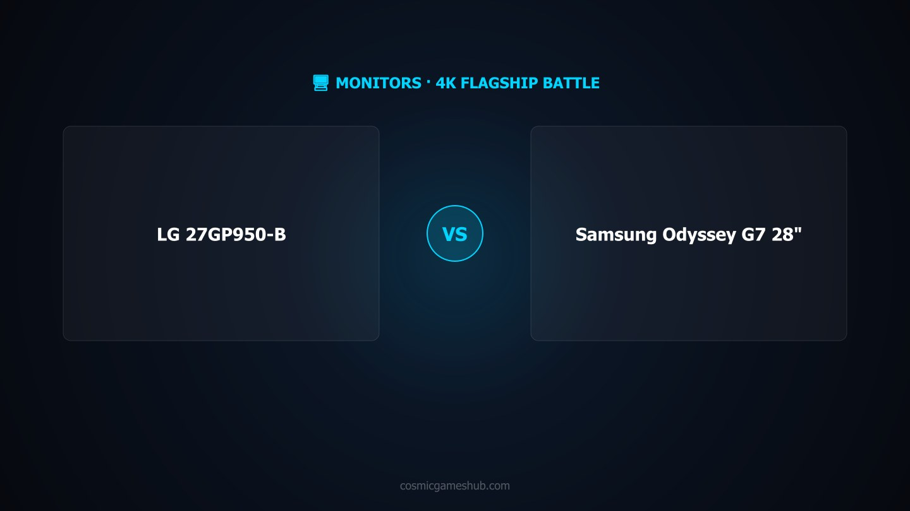

As an Amazon Associate I earn from qualifying purchases. Links below may earn us a commission at no extra cost to you.
LG 27GP950-B vs Samsung Odyssey G7 28": 4K Nano IPS HDR600 vs 4K IPS HDR400
Both are 28" 4K (3840×2160) monitors running at 144Hz with dual HDMI 2.1, DisplayPort 1.4, G-Sync Compatible, and FreeSync Premium Pro. Both hit 1ms GtG response time and cover 98% sRGB. On paper, they sound nearly identical — so why is the Samsung $150 more expensive? And which one actually wins for gaming, PS5, and desktop use in 2026? This comparison cuts through the spec-sheet similarities to the four differences that actually matter: HDR tier, USB-C power delivery, screen coating, and whether that $150 gap is justified.

LG 27GP950-B
~$400
27" 4K · Nano IPS · HDR600 · USB-C 90W
VS
Samsung Odyssey G7 28"
~$550
28" 4K · IPS · HDR400 · Matte Screen
Quick Verdict
LG 27GP950-B for HDR quality + USB-C 90W power delivery; Samsung G7 28" for matte screen + value if HDR isn't priority
The LG 27GP950-B costs $150 less and delivers better HDR — DisplayHDR 600 with Nano IPS wide color gamut versus the Samsung's DisplayHDR 400. It also includes USB-C with 90W power delivery, letting you connect and charge a laptop with a single cable. The Samsung Odyssey G7 28" is the pricier option, but its matte anti-glare coating is a genuine practical advantage in bright rooms, and its IPS panel performs excellently for gaming. If HDR performance matters to you or you need USB-C 90W charging, the LG wins — and at $150 less. If you're in a bright space and glare is a concern, the Samsung's matte screen may be worth the premium.
Head-to-Head: Category by Category
Display Quality
LG 27GP950-B (Nano IPS)
Both monitors are 4K IPS panels at 144Hz, but the LG's Nano IPS technology gives it a meaningful color advantage. Nano IPS uses nanometer-particle filtering to extend the color gamut beyond standard IPS, achieving wider DCI-P3 coverage for more vivid, accurate colors in HDR content and color-rich games. The Samsung uses standard IPS, which is still excellent — both panels cover 98% sRGB — but for wide-gamut content, the LG's Nano IPS produces richer saturation and better HDR color accuracy. For standard SDR gaming, both panels look sharp and accurate; the difference becomes most apparent in HDR titles and cinematic content.
HDR Performance
LG 27GP950-B (HDR600 vs HDR400)
This is the LG's biggest advantage. DisplayHDR 600 (LG) vs DisplayHDR 400 (Samsung) is a substantial gap — not just in peak brightness numbers but in real-world HDR impact. The LG hits 600 nits peak with local dimming zones that allow bright highlights against dark backgrounds simultaneously. The Samsung's HDR400 certification has no local dimming requirement and a lower brightness ceiling, meaning HDR content looks acceptable but not transformative. In games with strong HDR implementation — Spider-Man, Cyberpunk 2077, Returnal, Horizon Forbidden West — the LG's HDR is noticeably more dramatic with visible punch in specular highlights and fire, while the Samsung's HDR looks closer to a slightly brighter SDR image.
Connectivity
LG 27GP950-B (USB-C 90W)
Both monitors share the same core connectivity: dual HDMI 2.1 (supporting 4K 120fps on PS5 and Xbox Series X), DisplayPort 1.4, and USB-A downstream ports. The critical difference is USB-C: the LG includes USB-C with 90W power delivery, while the Samsung includes only USB-C at 15W. At 90W, the LG can power most laptops at full charging speed — MacBook Pro 14", Dell XPS 13/15, ThinkPads — with a single cable carrying both display signal and power. The Samsung's 15W USB-C is enough to trickle-charge a phone, but not a laptop. If you work on a laptop and game on it at your desk, the LG's 90W USB-C is a significant quality-of-life upgrade.
Gaming Features
Tie — Both Excellent
Both monitors are G-Sync Compatible and AMD FreeSync Premium Pro certified — full adaptive sync support on both Nvidia and AMD GPUs with low framerate compensation. Both run at 144Hz native (the LG overclocks to 160Hz), both hit 1ms GtG response time, and both support HDMI 2.1 for next-gen console gaming at 4K 120fps. The LG's 160Hz overclock is a minor bonus for PC gamers who want every frame, but at 4K, few GPUs can sustain 160fps in demanding titles. For practical gaming performance, these two monitors are essentially equal — the tie is genuine.
Design
Samsung Odyssey G7 28" (Matte Coating)
The Samsung wins this category on practical grounds: its matte anti-glare screen coating. The LG 27GP950-B uses a glossy panel — beautiful in a dark or controlled environment, where colors pop and blacks look deep. But in a room with windows, overhead lighting, or any ambient light, the LG's glossy surface reflects it. The Samsung's matte coating diffuses reflections, making it far more usable in bright office environments or mixed-lighting setups. If your desk faces a window or you game in a well-lit room, the Samsung's matte coating eliminates a daily frustration. In pure aesthetics, both monitors look premium — the Samsung has a sleek flat-back design; the LG's stand is adjustable with full ergonomics on both.
Value
LG 27GP950-B (~$400)
The LG 27GP950-B wins on value by a clear margin — it's $150 cheaper and has better HDR. Paying more for the Samsung means spending more to get less HDR performance and 75W less USB-C power delivery. The Samsung's matte screen and slight brand premium don't justify the $150 gap for most buyers. Where the Samsung earns its price is specifically: bright-room usage where matte coating matters, and buyers who genuinely don't care about HDR or USB-C charging. For the vast majority of gamers — especially those with PS5, Xbox Series X, or a gaming laptop — the LG delivers more of what matters at the lower price.
Spec Comparison
| Spec | LG 27GP950-B | Samsung Odyssey G7 28" (G70B) |
|---|---|---|
| Price | ~$399.99 | ~$549.99 |
| Panel | Nano IPS (Glossy) | IPS (Matte) |
| Size | 27" | 28" |
| Resolution | 3840×2160 (4K UHD) | 3840×2160 (4K UHD) |
| Refresh Rate | 144Hz (OC: 160Hz) | 144Hz |
| Response Time | 1ms GtG | 1ms GtG |
| HDR | DisplayHDR 600 | DisplayHDR 400 |
| Brightness | 400 nits typical / 600 nits peak | 400 nits |
| Color Coverage | 98% sRGB (Nano IPS) | 98% sRGB |
| HDMI Version | HDMI 2.1 ×2 | HDMI 2.1 ×2 |
| DisplayPort | DisplayPort 1.4 | DisplayPort 1.4 |
| USB-C Power Delivery | USB-C 90W | USB-C 15W |
| Adaptive Sync | G-Sync Compatible + FreeSync Premium Pro | G-Sync Compatible + FreeSync Premium Pro |
| ASIN | B09CC2Y4PZ | B09ZF8SMHJ |
4 Key Differences
1
HDR600 vs HDR400 — A Real Performance Gap
DisplayHDR 600 (LG) vs DisplayHDR 400 (Samsung) is the most impactful spec difference between these two monitors. The LG's 600-nit peak with local dimming produces genuinely dramatic HDR — bright highlights pop against dark environments, fire and explosions have real luminance impact, and night scenes retain detail in shadows. The Samsung's HDR400 is the minimum certification tier; it lacks mandatory local dimming and maxes at 400 nits, making HDR content look only marginally better than SDR. For console gaming on PS5 or Xbox Series X where HDR is a core feature, this gap matters constantly.
2
USB-C 90W vs 15W — Laptop Users Will Notice This Every Day
The LG's USB-C delivers 90W — enough to fully charge most gaming laptops (ASUS ROG, Razer Blade, MacBook Pro 14") at full speed via a single cable. The Samsung's 15W USB-C is essentially a slow phone charger; it won't meaningfully charge a laptop under load. If you connect a laptop to your monitor, the LG means one cable for video + power. The Samsung means a separate power brick. This is a daily workflow difference, not a spec curiosity. For desktop-only setups, both are equal — the difference only matters if a laptop is in your workflow.
3
Glossy vs Matte Screen Coating
The LG 27GP950-B has a semi-glossy panel — colors look rich and deep in controlled lighting, but ambient light reflects visibly. The Samsung Odyssey G7 28" uses a matte anti-glare coating that diffuses reflections. In a dark or dimly lit gaming room, the LG looks better. In a bright office, living room, or any space with windows and overhead lights, the Samsung is significantly more comfortable to use daily. Neither coating is objectively better — it's a setup-dependent trade-off. Know your environment before deciding.
4
~$150 Price Gap — The LG Costs Less and Performs Better in HDR
The Samsung Odyssey G7 28" costs ~$150 more than the LG 27GP950-B, yet the LG has better HDR (HDR600 vs HDR400) and significantly better USB-C power delivery (90W vs 15W). The Samsung's premium buys you a matte screen and its brand identity — meaningful advantages in the right context, but not universally superior. For most buyers, the LG is the better value proposition: you spend less and get more performance where it counts. The Samsung is the right pick specifically when matte coating matters more to you than HDR quality or laptop charging.
Which Should You Buy?
LG 27GP950-B
~$399.99
Best for: PS5 / Xbox Series X HDR gaming · Laptop users (USB-C 90W) · Dark/controlled room setups · Best HDR under $500
🛒 Check Price on Amazon
See All Monitor Picks →
Samsung Odyssey G7 28"
~$549.99
Best for: Bright room / office setups · Desktop-only users · Buyers where glare is a real problem · HDR not a priority
🛒 Check Price on Amazon
See All Monitor Picks →
More Monitor Guides & Comparisons
Frequently Asked Questions
It depends on what you need. The LG 27GP950-B's $150 premium buys you genuinely better HDR (HDR600 vs HDR400 — a meaningful jump in peak brightness and tone mapping), and USB-C 90W power delivery that can charge a laptop while you game. If you use a laptop as your main PC and care about HDR quality in supported titles, the LG earns its premium. If you primarily game on a desktop and HDR isn't a priority, the Samsung G7 28" gives you the same 4K 144Hz experience at a lower price with the bonus of a matte screen coating.
Both monitors support 4K 120fps on PS5 via HDMI 2.1 — each has two HDMI 2.1 ports. For PS5 use, the LG 27GP950-B has the edge thanks to HDR600 support. PS5's HDR implementation benefits significantly from higher peak brightness monitors; the LG's 600-nit HDR peak delivers noticeably more impact in HDR-enabled PS5 titles compared to the Samsung's 400-nit cap. Both are excellent PS5 monitors, but the LG gives you better HDR performance where it counts on console.
Yes. The Samsung Odyssey G7 28" (G70B) includes HDMI 2.1 ports that support 4K at 120fps, making it fully compatible with PS5's high-performance output mode. Enable 4K and 120Hz in the PS5 display settings, connect via HDMI 2.1, and you're set. The monitor's 144Hz native refresh rate means PS5's 120fps output runs comfortably within spec. VRR (variable refresh rate) over HDMI is also supported for compatible PS5 titles.
Nano IPS uses nanometer-sized particles applied to the IPS panel to filter out excess light wavelengths, resulting in wider color gamut coverage (typically 98% DCI-P3 vs 72–85% for standard IPS) and more accurate, vivid colors. For gaming, Nano IPS means richer reds, deeper greens, and more saturated blues — especially noticeable in HDR content and games with strong color art direction. The Samsung G7 28" uses standard IPS and also achieves 98% sRGB coverage, but the LG's Nano IPS has an advantage in DCI-P3 coverage for HDR and wide-gamut content.
Yes — the LG 27GP950-B has DisplayHDR 600 certification, which is the first tier where HDR starts to look genuinely impactful. It delivers 400 nits typical brightness and 600 nits peak, with full-array local dimming and Nano IPS's wide color gamut. This is a significant step up from DisplayHDR 400 (the Samsung's rating), which lacks local dimming and has a lower brightness ceiling. In HDR-enabled games and movies, the LG produces noticeably brighter highlights, better shadow detail, and more vivid colors. It's not OLED-level HDR, but it's among the best HDR available in non-OLED monitors at this price.
Affiliate Disclosure: As an Amazon Associate I earn from qualifying purchases. Prices shown are approximate and may vary. Always check Amazon for current pricing.